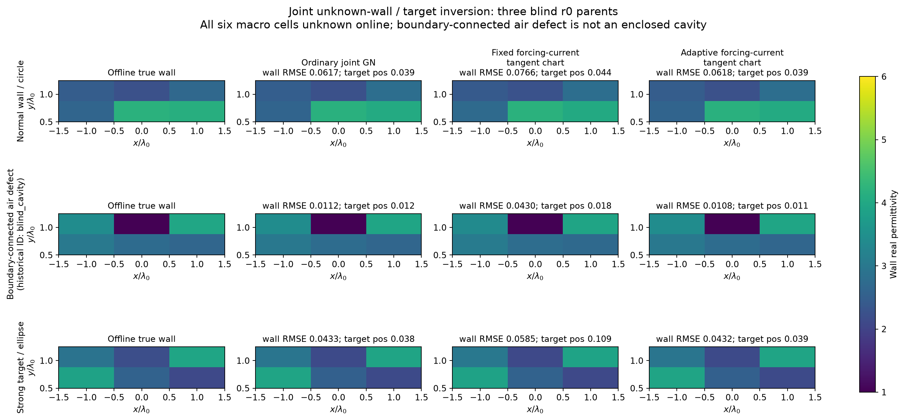
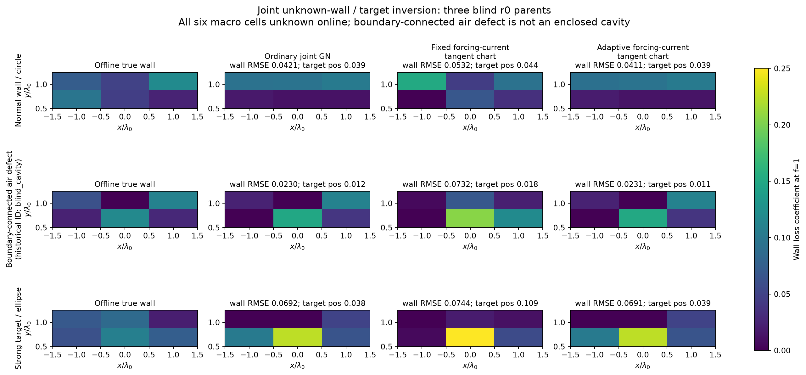
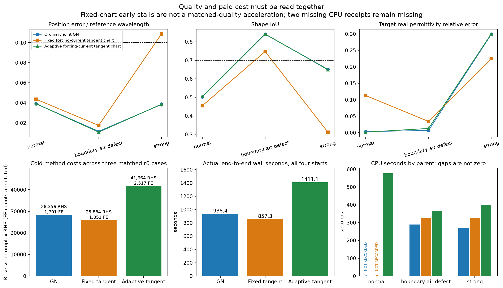
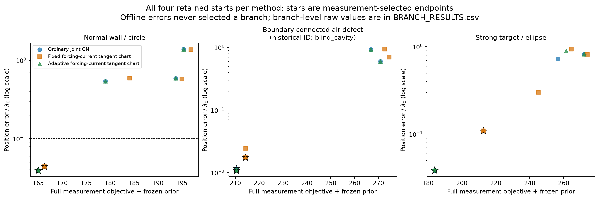
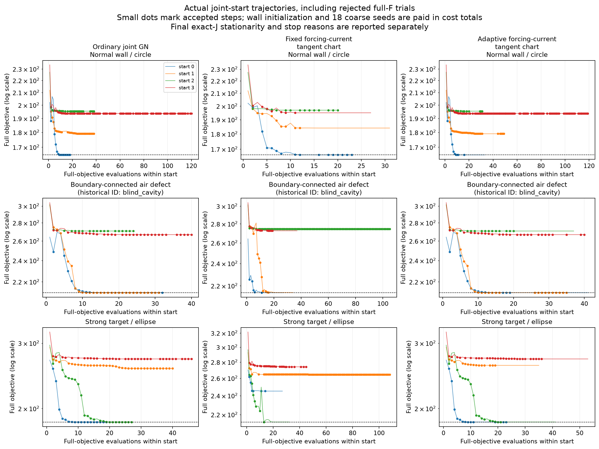
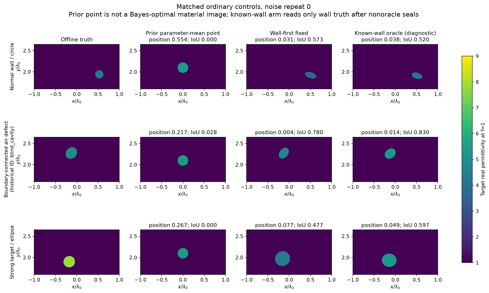

发布记录：2026-10-30，按用户“发布”请求公开。科研于2026-10-29 18:25 UTC封账；原报告中的“未发布/未授权”描述当时状态，原始裁决与归档不回写。发布没有新增物理计算。
真实成像与失败画廊
全部来自已保存实验数组。点击图片看原尺寸；未运行数字没有重建图。










发布记录：2026-10-30，按用户“发布”请求公开。科研于2026-10-29 18:25 UTC封账；原报告中的“未发布/未授权”描述当时状态，原始裁决与归档不回写。发布没有新增物理计算。
全部来自已保存实验数组。点击图片看原尺寸；未运行数字没有重建图。





